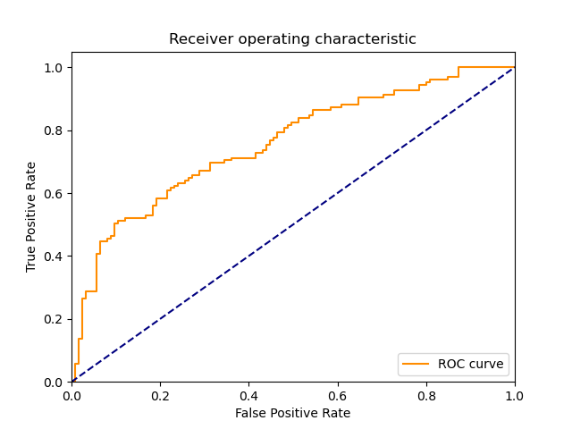

| 8 |
MLP |
Multi-layer Perceptron classifier. |
0.921837 |
0.000000 |
97 |
93 |
32 |
28 |
0.776 |
0.744 |
0.751938 |
0.760 |
0.240 |
0.763780 |
1.101750 |
0.828541 |
inf |
|
|
|
| 6 |
NonLinearSVM |
Non Linear Support Vector Classification |
0.015631 |
0.015624 |
116 |
68 |
57 |
9 |
0.928 |
0.544 |
0.670520 |
0.736 |
0.264 |
0.778523 |
1.055902 |
49.805744 |
49.830065 |
 |
|
 |
| 9 |
AdaBoostClassifier |
An AdaBoost classifier |
0.156282 |
0.000000 |
107 |
71 |
54 |
18 |
0.856 |
0.568 |
0.664596 |
0.712 |
0.288 |
0.748252 |
1.001408 |
4.787825 |
inf |
|
|
|
| 4 |
KNeighborsClassifier |
Classifier implementing the k-nearest neighbors vote |
0.000000 |
0.015623 |
114 |
62 |
63 |
11 |
0.912 |
0.496 |
0.644068 |
0.704 |
0.296 |
0.754967 |
0.990928 |
inf |
48.324517 |
 |
 |
|
| 1 |
RealBoost |
An RealBoost classifier |
0.468714 |
0.000000 |
106 |
68 |
57 |
19 |
0.848 |
0.544 |
0.650307 |
0.696 |
0.304 |
0.736111 |
0.970834 |
1.570493 |
inf |
 |
 |
 |
| 7 |
LP |
Linear perceptron classifier |
0.000000 |
0.000000 |
108 |
65 |
60 |
17 |
0.864 |
0.520 |
0.642857 |
0.692 |
0.308 |
0.737201 |
0.965162 |
inf |
inf |
 |
|
|
| 5 |
LinearSVM |
Linear Support Vector Classification |
0.062495 |
0.000000 |
79 |
93 |
32 |
46 |
0.632 |
0.744 |
0.711712 |
0.688 |
0.312 |
0.669492 |
0.932830 |
10.712804 |
inf |
|
|
 |
| 2 |
BernoulliNBC |
Naive Bayes classifier for multivariate Bernoulli models |
0.000000 |
0.000000 |
110 |
51 |
74 |
15 |
0.880 |
0.408 |
0.597826 |
0.644 |
0.356 |
0.711974 |
0.889869 |
inf |
inf |
 |
 |
 |
| 3 |
GaussianNBC |
Gaussian Naive Bayes (GaussianNB) |
0.000000 |
0.000000 |
102 |
31 |
94 |
23 |
0.816 |
0.248 |
0.520408 |
0.532 |
0.468 |
0.635514 |
0.743073 |
inf |
inf |
 |
 |
 |
| 0 |
DiscreteNBC |
DiscreteNBC |
0.046679 |
0.015629 |
61 |
54 |
71 |
64 |
0.488 |
0.432 |
0.462121 |
0.460 |
0.540 |
0.474708 |
0.606751 |
10.169626 |
30.373444 |
 |
 |
 |
{kind=link}
{kind=link}
{kind=link}
{kind=link}
{kind=link}
{kind=link}
{kind=link}
{kind=link}
{kind=link}
{kind=link}
{kind=link}
{kind=link}
{kind=link}